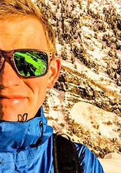
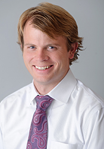
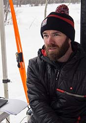
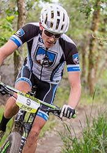
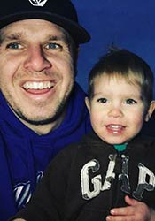
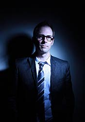
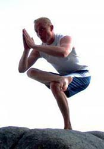
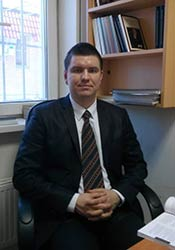

Our experienced staff is here to work for you. We are one team and we love to get to know our clients. In turn, we love to share what we are passionate about and what we do at our best. Our team has a combined 50 years experience in the outdoor development field. Let that experience change your team and your product.

Parker Goodwin Owner of Adventure Development. Parker has worked in the development business for 5 years. Mountain biking is his passion.

Chandler Dennison Assistant of Adventure Development. Chandler has experience in keeping finance and business in line. Running is his passion.

Randy Johnson Director of Adventure Development. Randy is the best when it comes to development. Road biking is where his heart is.

Stewart Jensen Developer for Adventure Development. Stewart is one of the best field testers there is. Racing bikes is his catch in life.

Mike Bailey Developer for Adventure Development. Mike has been with Stewart for years. They are inseperable. That's why they work together.

James Allen Consultant for Adventure Development. James is the best business and planning specialist in Utah. Art is his passion.

Sterling Davis Consultant for Adventure Development. Sterling is the best for making future plans for development. Yoga will always have his heart.

Sasha Vasiliev Programmer for Adventure Development. Fluent in code. Fluent in English and Russian. Doesn't get cooler than that.